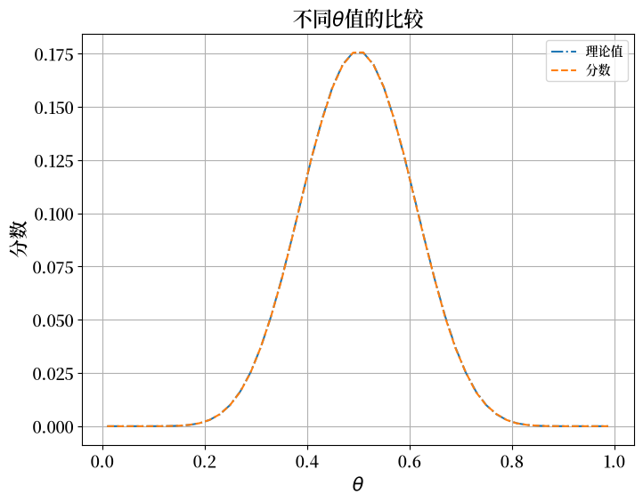
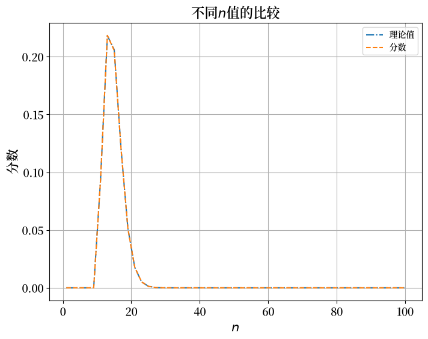
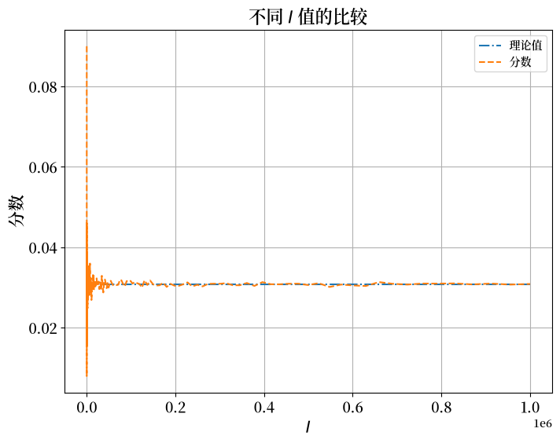
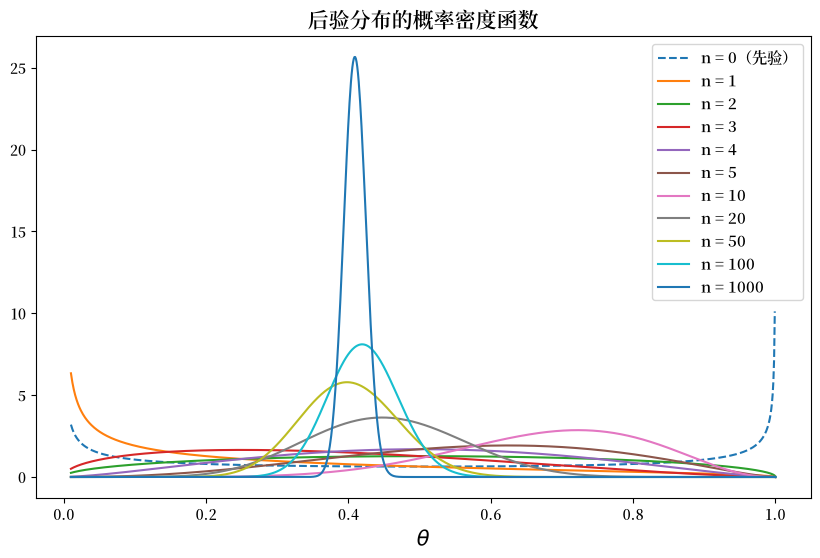
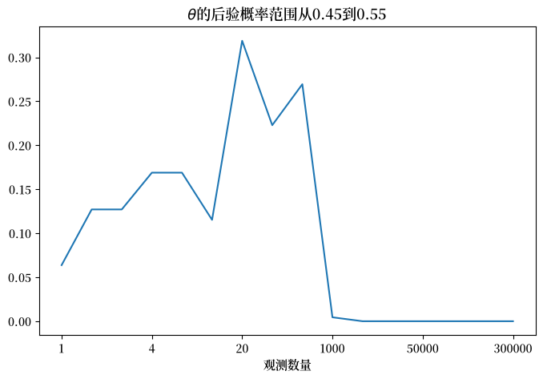
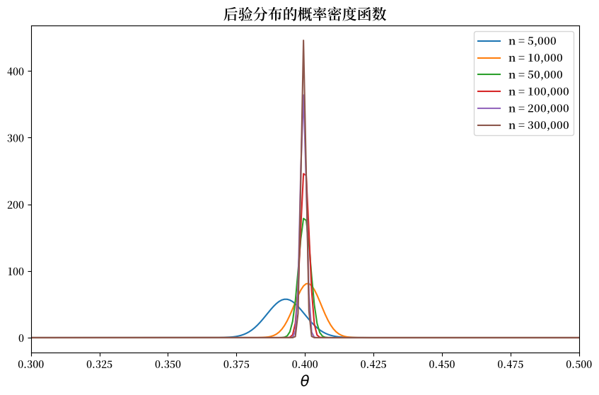
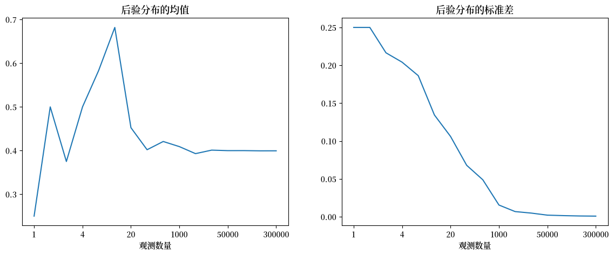
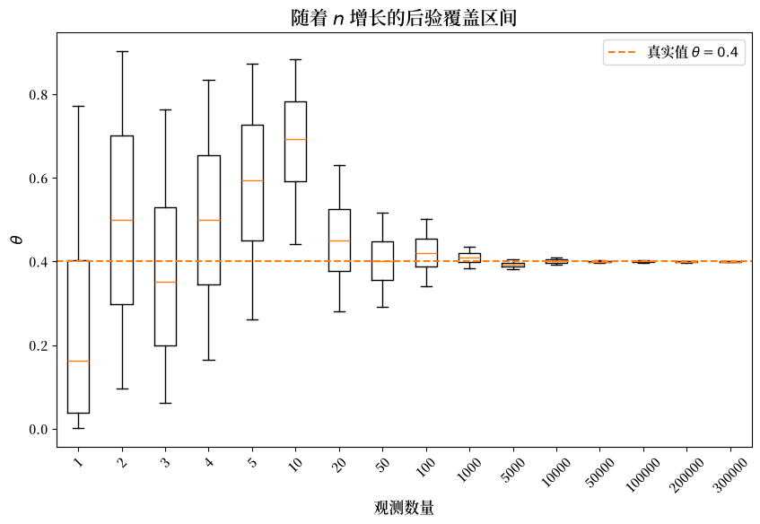

11. 概率的两种含义#
11.1. 概述#
本讲座说明了概率分布的两种不同解释
频率主义解释：在大型独立同分布样本中，概率表示预期出现的相对频率
贝叶斯解释：概率是在观察一系列数据后对参数或参数列表的个人观点
在继续之前，我们建议观看以下两个视频：
在您熟悉这些视频中的内容后，本讲座将使用苏格拉底提问法来帮助巩固您对概率这两种含义的理解。
在此过程中，我们将构造一个贝叶斯覆盖区间，并将它所回答的问题与本讲座开篇的频率主义相对频率推理进行对比。
我们通过邀请您编写一些Python代码来实现这一点。
如果您能在我们提出的每个问题之后都尝试这样做，然后再继续阅读讲座的其余部分，那将会特别有用。
随着讲座的展开，我们会提供我们自己的答案，但如果您在阅读和运行我们的代码之前尝试编写自己的代码，您会学到更多。
11.1.1. 回答问题的代码#
为了回答我们的编程问题，我们先导入一些库
import numpy as np
import pandas as pd
import matplotlib.pyplot as plt
import matplotlib as mpl
FONTPATH = "fonts/SourceHanSerifSC-SemiBold.otf"
mpl.font_manager.fontManager.addfont(FONTPATH)
plt.rcParams['font.family'] = ['Source Han Serif SC']
from scipy.stats import binom
import scipy.stats as st
有了这些Python工具，我们现在来探索上述两种含义。
11.2. 频率主义解释#
考虑以下经典例子。
随机变量 \(X\) 可能取值为 \(k = 0, 1, 2, \ldots, n\)，其概率为
其中固定参数 \(\theta \in (0,1)\)。
这被称为二项分布。
这里
\(\theta\) 是一次硬币投掷出现正面的概率，我们将这个结果编码为 \(Y = 1\)。
\(1 -\theta\) 是一次硬币投掷出现反面的概率，我们将这个结果表示为 \(Y = 0\)。
\(X\) 是投掷硬币 \(n\) 次后出现正面的总次数。
考虑以下实验：
进行 \(I\) 次独立的硬币投掷序列，每次序列包含 \(n\) 次独立的投掷
注意这里重复使用了独立这个形容词：
我们用它来描述从参数为 \(\theta\) 的伯努利分布中进行 \(n\) 次独立抽样，从而得到一个参数为 \(\theta,n\) 的二项分布的一次抽样。
我们再次使用它来描述我们进行 \(I\) 次这样的 \(n\) 次硬币投掷序列。
令 \(y_h^i \in \{0, 1\}\) 表示第 \(i\) 次序列中第 \(h\) 次投掷的 \(Y\) 的实际值。
令 \(\sum_{h=1}^n y_h^i\) 表示第 \(i\) 次序列的 \(n\) 次独立硬币投掷中出现正面的总次数。
令 \(f_k\) 记录长度为 \(n\) 的样本中满足 \(\sum_{h=1}^n y_h^i = k\) 的比例:
概率 \(p(k \mid \theta)\) 回答了以下问题:
当 \(I\) 变大时,在 \(I\) 次独立的 \(n\) 次硬币投掷中,我们应该预期有多大比例会出现 \(k\) 次正面?
像往常一样,大数定律证明了这个答案。
练习 11.1
请编写Python代码来计算 \(f_k^I\)
请使用你的代码计算 \(f_k^I, k = 0, \ldots , n\) 并将其与不同 \(\theta, n\) 和 \(I\) 值下的 \(p(k \mid \theta)\) 进行比较
结合大数定律，使用你的代码描述当 \(I\) 增长时 \(f_k^I\) 与 \(p(k \mid \theta)\) 之间的关系
解答 练习 11.1
这是一个解决方案。
我们用一个函数来模拟硬币投掷，用另一个函数来组装比较表。
def simulate_head_counts(θ, n, I, seed=1234):
"模拟 I 个长度为 n 的投掷序列；返回每个序列中出现正面的次数。"
rng = np.random.default_rng(seed)
Y = (rng.random((I, n)) <= θ).astype(int)
return Y.sum(axis=1)
def compare_frequencies(θ, n, I, seed=1234):
"将理论二项概率与模拟频率制成表格进行对比。"
head_counts = simulate_head_counts(θ, n, I, seed)
rows = [
(k, binom.pmf(k, n, θ), np.mean(head_counts == k))
for k in range(n + 1)
]
return pd.DataFrame(
rows, columns=['k', '理论值', '频率值']
).set_index('k')
θ, n, k, I = 0.7, 20, 10, 1_000_000
compare_frequencies(θ, n, I)
| 理论值 | 频率值 | |
|---|---|---|
| k | ||
| 0 | 3.486784e-11 | 0.000000 |
| 1 | 1.627166e-09 | 0.000000 |
| 2 | 3.606885e-08 | 0.000000 |
| 3 | 5.049639e-07 | 0.000000 |
| 4 | 5.007558e-06 | 0.000002 |
| 5 | 3.738977e-05 | 0.000047 |
| 6 | 2.181070e-04 | 0.000247 |
| 7 | 1.017833e-03 | 0.001029 |
| 8 | 3.859282e-03 | 0.003721 |
| 9 | 1.200665e-02 | 0.011986 |
| 10 | 3.081708e-02 | 0.030698 |
| 11 | 6.536957e-02 | 0.065110 |
| 12 | 1.143967e-01 | 0.114892 |
| 13 | 1.642620e-01 | 0.164639 |
| 14 | 1.916390e-01 | 0.191724 |
| 15 | 1.788631e-01 | 0.178623 |
| 16 | 1.304210e-01 | 0.129870 |
| 17 | 7.160367e-02 | 0.072004 |
| 18 | 2.784587e-02 | 0.027818 |
| 19 | 6.839337e-03 | 0.006836 |
| 20 | 7.979227e-04 | 0.000754 |
从上表中，你能看出大数定律在起作用吗？
让我们进行更多计算。
11.2.1. 不同\(\theta\)值的比较#
现在我们固定
我们将\(\theta\)从\(0.01\)变化到\(0.99\)，并绘制结果与\(\theta\)的关系图。
θ_low, θ_high, n_thetas = 0.01, 0.99, 50
thetas = np.linspace(θ_low, θ_high, n_thetas)
P = []
f_kI = []
for i in range(n_thetas):
P.append(binom.pmf(k, n, thetas[i]))
head_counts = simulate_head_counts(thetas[i], n, I, seed=i)
f_kI.append(np.mean(head_counts == k))
fig, ax = plt.subplots(figsize=(8, 6))
ax.grid()
ax.plot(thetas, P, '-.', label='理论值')
ax.plot(thetas, f_kI, '--', label='分数')
ax.set_title(r'不同$\theta$值的比较',
fontsize=16)
ax.set_xlabel(r'$\theta$', fontsize=15)
ax.set_ylabel('分数', fontsize=15)
ax.tick_params(labelsize=13)
ax.legend()
plt.show()
findfont: Failed to find font weight normal, now using 600.
findfont: Failed to find font weight normal, now using 600.
findfont: Failed to find font weight normal, now using 600.
findfont: Failed to find font weight normal, now using 600.
findfont: Failed to find font weight normal, now using 600.
findfont: Failed to find font weight normal, now using 600.

11.2.2. 不同 \(n\) 值的比较#
现在我们固定 \(\theta=0.7, k=10, I=1,000,000\) 并将 \(n\) 从 \(1\) 变化到 \(100\)。
然后我们将绘制结果。
n_low, n_high, n_ns = 1, 100, 50
ns = np.linspace(n_low, n_high, n_ns, dtype='int')
P = []
f_kI = []
for i in range(n_ns):
P.append(binom.pmf(k, ns[i], θ))
head_counts = simulate_head_counts(θ, ns[i], I, seed=i)
f_kI.append(np.mean(head_counts == k))
fig, ax = plt.subplots(figsize=(8, 6))
ax.grid()
ax.plot(ns, P, '-.', label='理论值')
ax.plot(ns, f_kI, '--', label='分数')
ax.set_title(r'不同$n$值的比较',
fontsize=16)
ax.set_xlabel(r'$n$', fontsize=15)
ax.set_ylabel('分数', fontsize=15)
ax.tick_params(labelsize=13)
ax.legend()
plt.show()

由于 \(k=10\) 保持固定，只要 \(n < 10\)，\(p(k \mid \theta)\) 就为零——我们不可能在少于 \(10\) 次投掷中得到 \(10\) 次正面——并且在 \(n \approx 14\) 附近取得最大值，此时期望的正面次数 \(n\theta\) 最接近 \(k\)。模拟得到的比例呈现出同样的形状。
11.2.3. 不同 \(I\) 值的比较#
现在我们固定 \(\theta=0.7, n=20, k=10\)，并将 \(\log(I)\) 从 \(2\) 变化到 \(6\)。
I_log_low, I_log_high, n_Is = 2, 6, 200
log_Is = np.linspace(I_log_low, I_log_high, n_Is)
Is = np.power(10, log_Is).astype(int)
P = []
f_kI = []
for i in range(n_Is):
P.append(binom.pmf(k, n, θ))
head_counts = simulate_head_counts(θ, n, Is[i], seed=i)
f_kI.append(np.mean(head_counts == k))
fig, ax = plt.subplots(figsize=(8, 6))
ax.grid()
ax.plot(Is, P, '-.', label='理论值')
ax.plot(Is, f_kI, '--', label='分数')
ax.set_title(r'不同 $I$ 值的比较',
fontsize=16)
ax.set_xlabel(r'$I$', fontsize=15)
ax.set_ylabel('分数', fontsize=15)
ax.tick_params(labelsize=13)
ax.legend()
plt.show()

从上面的图表中，我们可以看到 \(I\)，即独立序列的数量，起着重要作用。
随着 \(I\) 变大，理论概率和频率估计之间的差距变小。
而且，只要 \(I\) 足够大，改变 \(\theta\) 或 \(n\) 都不会实质性地改变观察到的分数作为 \(p(k \mid \theta)\) 近似值的准确性。
这正是大数定律在起作用。
对于每个独立序列 \(i\)，定义指示变量 \(\rho_{k,i} = \mathbb{1}\{X_i = k\}\)——也就是说，如果第 \(i\) 个序列恰好产生 \(k\) 次正面，则 \(\rho_{k,i}\) 等于 1，否则为 0。
\(\rho_{k,i}\) 在 \(i\) 之间是独立同分布的，每一个的均值都是 \(p(k \mid \theta)\)，方差为
因此，根据大数定律，当 \(I\) 趋向于无穷时，\(\rho_{k,i}\) 的平均值收敛于：
11.3. 贝叶斯解释#
似然函数仍然是二项分布，但现在我们把 \(\theta\) 看作是一个随机变量，而不是一个固定的参数。
因此 \(\theta\) 由一个概率分布来描述。
但现在这个概率分布的含义与我们在大规模独立同分布样本中能预期出现的相对频率不同。
相反，\(\theta\) 的概率分布现在是我们对 \(\theta\) 可能值的看法的总结，这些看法要么是
在我们完全没有看到任何数据之前，或者
在我们已经看到一些数据之后，但在看到更多数据之前
11.3.1. beta先验及其后验#
因此，假设在看到任何数据之前，你有一个个人先验概率分布，其密度为
其中 \(B(\alpha, \beta)\) 是一个贝塔函数，所以 \(p(\theta)\) 是参数为 \(\alpha, \beta\) 的贝塔分布的密度。
在观察到数据后，我们可以用贝叶斯定律来更新这个先验（相关介绍见 用矩阵表示概率）。
对于一个产生 \(k\) 次正面的 \(n\) 次硬币投掷样本，似然函数就是上面介绍的二项分布的概率质量函数 \(p(k \mid \theta)\)。
将贝叶斯定律应用于我们的beta先验，后验密度为
由于beta先验与二项似然函数共轭，这个积分可以求解为（核为）另一个beta密度，因此
下面的第一个练习要求你推导出这个封闭形式。
练习 11.2
a) 请写出结果为 \(Y \in \{0, 1\}\) 的单次硬币投掷的似然函数。
b) 请写出观察到该单次投掷后 \(\theta\) 的后验分布。
c) 请推导出对于产生 \(k\) 次正面的 \(n\) 次投掷样本，其后验分布的封闭形式 (11.1)。
解答 练习 11.2
a) 结果为 \(Y \in \{0, 1\}\) 的单次硬币投掷的似然函数为
b) 根据贝叶斯定律，观察到单次投掷 \(Y\) 后 \(\theta\) 的后验密度为
代入 (a) 中的似然函数和beta先验密度，可得
整理 \(\theta\) 和 \((1-\theta)\) 的幂次，我们识别出这是一个beta密度的核：
这意味着
c) 用二项似然函数代替伯努利似然函数进行同样的计算，可以将结果推广到产生 \(k\) 次正面的 \(n\) 次投掷样本。
beta先验贡献了因子 \(\theta^{\alpha-1}(1-\theta)^{\beta-1}\)，二项似然函数贡献了 \(\theta^{k}(1-\theta)^{n-k}\)，所以后验分布正比于
这是一个beta密度的核。因此
正如 (11.1) 中所述。
11.3.2. 数值探索后验分布#
下一个练习将运用这个后验分布。
练习 11.3
a) 现在假设 \(\theta\) 的真实值为 \(0.4\)，而某个不知道这一点的人有一个参数为 \(\beta = \alpha = 0.5\) 的beta先验分布。请编写Python代码来模拟这个人对于一个长度为 \(n\) 的单个抽取序列的 \(\theta\) 的个人后验分布。
b) 请绘制当 \(n\) 增长为 \(1, 2, \ldots\) 时，\(\theta\) 的后验分布关于 \(\theta\) 的函数图。
c) 对于不同的 \(n\) 值，请描述并计算区间 \([0.45, 0.55]\) 的贝叶斯覆盖区间。
d) 请说明贝叶斯覆盖区间回答了什么问题。
e) 请计算对于不同的样本大小 \(n\)，\(\theta \in [0.45, 0.55]\) 的后验概率的值。
f) 请使用你的Python代码来研究当 \(n \rightarrow + \infty\) 时后验分布会发生什么变化，同样假设 \(\theta\) 的真实值为 \(0.4\)，尽管对于通过贝叶斯定律进行更新的人来说这是未知的。
解答 练习 11.3
a)
我们用一个函数来模拟一系列硬币投掷，用另一个函数从其中前 n_obs 次投掷中构造beta后验分布。
def simulate_flips(θ=0.4, n=1_000_000, seed=1234):
"模拟 n 次硬币投掷，每次以概率 θ 出现正面（1）。"
rng = np.random.default_rng(seed)
return (rng.random(n) < θ).astype(int)
def form_posterior(draws, n_obs, α=0.5, β=0.5):
"给定 Beta(α, β) 先验，根据前 n_obs 次投掷构造 θ 的beta后验分布。"
heads = draws[:n_obs].sum()
return st.beta(α + heads, β + n_obs - heads)
b)
draws = simulate_flips()
n_obs_list = [1, 2, 3, 4, 5, 10, 20, 50,
100, 1000,
5000, 10_000, 50_000, 100_000,
200_000, 300_000]
posterior_list = [form_posterior(draws, n_obs) for n_obs in n_obs_list]
θ_values = np.linspace(0.01, 1, 1000)
fig, ax = plt.subplots(figsize=(10, 6))
prior = st.beta(0.5, 0.5)
ax.plot(θ_values, prior.pdf(θ_values),
label='n = 0（先验）', linestyle='--')
for i, n_obs in enumerate(n_obs_list[:10]):
posterior = posterior_list[i]
ax.plot(θ_values, posterior.pdf(θ_values),
label=f'n = {n_obs}')
ax.set_title('后验分布的概率密度函数',
fontsize=15)
ax.set_xlabel(r"$\theta$", fontsize=15)
ax.legend(fontsize=11)
plt.show()
findfont: Failed to find font weight normal, now using 600.

c)
lower_bound = [post.ppf(0.05) for post in posterior_list[:10]]
upper_bound = [post.ppf(0.95) for post in posterior_list[:10]]
interval_df = pd.DataFrame()
interval_df['upper'] = upper_bound
interval_df['lower'] = lower_bound
interval_df.index = n_obs_list[:10]
interval_df = interval_df.T
interval_df
| 1 | 2 | 3 | 4 | 5 | 10 | 20 | 50 | 100 | 1000 | |
|---|---|---|---|---|---|---|---|---|---|---|
| upper | 0.771480 | 0.902692 | 0.764466 | 0.83472 | 0.872224 | 0.882671 | 0.629953 | 0.516104 | 0.502138 | 0.434744 |
| lower | 0.001543 | 0.097308 | 0.062413 | 0.16528 | 0.260634 | 0.441873 | 0.280091 | 0.292234 | 0.341239 | 0.383644 |
随着\(n\)的增加，我们可以看到贝叶斯覆盖区间变窄并趋向于\(0.4\)。
d) 贝叶斯覆盖区间表示后验分布的累积分布函数(CDF)中 \([q_1, q_2]\) 分位数对应的 \(\theta\) 的范围。
要构建覆盖区间，我们首先计算未知参数\(\theta\)的后验分布。
如果CDF为\(F(\theta)\)，那么区间 \([q_1,q_2]\) 的贝叶斯覆盖区间 \([a,b]\) 由以下等式描述：
e)
left_value, right_value = 0.45, 0.55
posterior_prob_list = [
post.cdf(right_value) - post.cdf(left_value)
for post in posterior_list
]
fig, ax = plt.subplots(figsize=(8, 5))
ax.plot(posterior_prob_list)
ax.set_title(
r'$\theta$的后验概率'
f'范围从{left_value:.2f}'
f'到{right_value:.2f}',
fontsize=13)
ax.set_xticks(np.arange(0, len(posterior_prob_list), 3))
ax.set_xticklabels(n_obs_list[::3])
ax.set_xlabel('观测数量', fontsize=11)
plt.show()
findfont: Failed to find font weight normal, now using 600.

注意在上图中，当 \(n\) 增加时，\(\theta \in [0.45, 0.55]\) 的后验概率呈现出驼峰形状。
这里有两种相互对立的力量在起作用。
第一种力量是，个体在观察到新的结果时会调整他的信念，使他的后验概率分布变得越来越符合真实值，这解释了后验概率的上升。
然而，\([0.45, 0.55]\) 实际上排除了生成数据的真实 \(\theta = 0.4\)。
因此，随着更大的样本量使他的 \(\theta\) 后验概率分布变得更加精确，后验概率开始下降。
下降看起来如此陡峭，仅仅是因为图表的尺度使得观测数量增加不成比例。
当观测数量变得足够大时，我们的贝叶斯学习者对 \(\theta\) 变得如此确信，以至于他认为 \(\theta \in [0.45, 0.55]\) 的可能性非常小。
这就是为什么当观测数量超过1000时，我们看到一条几乎水平的线。
f) 使用我们上面创建的函数，我们可以看到后验分布随着 \(n\) 趋向于无穷大时的演变。
fig, ax = plt.subplots(figsize=(10, 6))
for i, n_obs in enumerate(n_obs_list[10:]):
posterior = posterior_list[i + 10]
ax.plot(θ_values, posterior.pdf(θ_values),
label=f'n = {n_obs:,}')
ax.set_title('后验分布的概率密度函数', fontsize=15)
ax.set_xlabel(r"$\theta$", fontsize=15)
ax.set_xlim(0.3, 0.5)
ax.legend(fontsize=11)
plt.show()

随着 \(n\) 的增加，我们可以看到概率密度函数在 \(0.4\)（即 \(\theta\) 的真实值）处集中。
下一节将解释这种集中现象为什么会发生，以及它发生的速度有多快。
11.3.3. 为什么后验分布会集中#
在 练习 11.3 的解答中，我们观察到随着样本的增长，后验分布越来越紧密地集中在真实值 \(\theta = 0.4\) 附近。为什么会这样呢？
答案就蕴含在我们推导出的后验分布中。
回想一下，在 \(n\) 次投掷中观察到 \(k\) 次正面之后，后验分布为 \(\textrm{Beta}(\alpha + k, \, \beta + n - k)\)。
一个参数为 \(a\) 和 \(b\) 的beta分布具有
均值 \(\dfrac{a}{a + b}\)，
方差 \(\dfrac{a\, b}{(a + b)^2\, (a + b + 1)}\)。
代入后验参数 \(a = \alpha + k\) 和 \(b = \beta + n - k\)，从而 \(a + b = \alpha + \beta + n\)，可得
随着 \(n\) 增大，固定的先验计数 \(\alpha\) 和 \(\beta\) 相对于数据而言变得可以忽略不计。
由于数据是以 \(\theta = 0.4\) 生成的，大数定律给出 \(k/n \to 0.4\)（见 练习 11.1），因此后验均值
在方差中，分子以 \(n^2\) 的速度增长，而分母以 \(n^3\) 的速度增长，因此
因此，后验均值趋于真实值，而其离散程度以 \(1/n\) 的速率消失。
下图证实了这两个论断：后验均值稳定在 \(0.4\)，标准差朝零衰减。
mean_list = [post.mean() for post in posterior_list]
std_list = [post.std() for post in posterior_list]
fig, ax = plt.subplots(1, 2, figsize=(14, 5))
ax[0].plot(mean_list)
ax[0].set_title('后验分布的均值',
fontsize=13)
ax[0].set_xticks(np.arange(0, len(mean_list), 3))
ax[0].set_xticklabels(n_obs_list[::3])
ax[0].set_xlabel('观测数量', fontsize=11)
ax[1].plot(std_list)
ax[1].set_title('后验分布的标准差',
fontsize=13)
ax[1].set_xticks(np.arange(0, len(std_list), 3))
ax[1].set_xticklabels(n_obs_list[::3])
ax[1].set_xlabel('观测数量', fontsize=11)
plt.show()

我们还可以直接展示贝叶斯覆盖区间。
下面的箱形图用中位数（中间线）、四分位距（箱体）以及第 \(5\) 至第 \(95\) 百分位数范围（须线）总结了每个后验分布，并标出了真实值 \(\theta = 0.4\)。
quantiles = [0.05, 0.25, 0.5, 0.75, 0.95]
box_stats = []
for post in posterior_list:
lo, q1, med, q3, hi = post.ppf(quantiles)
box_stats.append({'med': med, 'q1': q1, 'q3': q3,
'whislo': lo, 'whishi': hi, 'fliers': []})
fig, ax = plt.subplots(figsize=(10, 6))
ax.bxp(box_stats, positions=np.arange(len(box_stats)), showfliers=False)
ax.axhline(0.4, color='C1', linestyle='--', label=r'真实值 $\theta = 0.4$')
ax.set_xticks(np.arange(len(box_stats)))
ax.set_xticklabels(n_obs_list, rotation=45)
ax.set_xlabel('观测数量', fontsize=12)
ax.set_ylabel(r'$\theta$', fontsize=12)
ax.set_title(r'随着 $n$ 增长的后验覆盖区间', fontsize=15)
ax.legend(fontsize=11)
plt.show()
findfont: Failed to find font weight normal, now using 600.
findfont: Failed to find font weight normal, now using 600.
findfont: Failed to find font weight normal, now using 600.

在观察了大量结果后，后验分布收敛在\(0.4\)周围。
因此，贝叶斯统计学家认为 \(\theta\) 接近 \(0.4\)。
如上图所示，随着观测数量的增加，贝叶斯覆盖区间(BCIs)在 \(0.4\) 周围变得越来越窄。
然而，如果仔细观察，你会发现BCIs的中心并不完全是\(0.4\)，这是由于先验分布的持续影响和模拟路径的随机性造成的。
11.4. 比较两种解释#
现在我们可以将概率的两种含义并列比较。
在频率主义计算中，\(\theta\) 是一个固定的数，概率是一种相对频率：\(p(k \mid \theta)\) 是大量独立的长度为 \(n\) 的序列中恰好出现 \(k\) 次正面的比例，我们通过模拟证实了当 \(I \to \infty\) 时 \(f_k^I \to p(k \mid \theta)\)。
在贝叶斯计算中，\(\theta\) 本身是描述我们信念的随机变量，概率是一种信念程度。贝叶斯覆盖区间总结了后验分布 \(p(\theta \mid k)\)：它给出了位于两个后验分位数之间的 \(\theta\) 的范围，从而回答了这样一个问题——“根据我已经观察到的数据和我的先验，我现在认为 \(\theta\) 位于何处？”
尽管两者都基于相同的二项似然函数，但它们实际上回答的是不同的问题。频率主义的表述描述的是在固定 \(\theta\) 下的数据生成机制；贝叶斯的表述描述的是在我们碰巧观察到的特定数据下，我们对 \(\theta\) 的不确定性。
11.5. 共轭先验的作用#
我们做出了一些假设，将似然函数和先验的函数形式联系起来，这大大简化了我们的计算。
特别是，我们假设似然函数是二项分布，而先验分布是beta分布，这导致贝叶斯定律推导出的后验分布也是beta分布。
所以后验和先验都是beta分布，只是它们的参数不同。
当似然函数和先验像手和手套一样完美匹配时，我们可以说先验和后验是共轭分布。
在这种情况下，我们有时也说我们有似然函数 \(p(k \mid \theta)\) 的共轭先验。
通常，似然函数的函数形式决定了共轭先验的函数形式。
一个自然的问题是，为什么一个人对参数 \(\theta\) 的个人先验必须局限于共轭先验的形式？
为什么不能是其他更真实地描述个人信念的函数形式？
从争辩的角度来说，人们可以问，为什么似然函数的形式应该对我关于 \(\theta\) 的个人信念有任何影响？
对这个问题的一个得体回答是，确实不应该有影响，但如果你想要轻松地计算后验分布，使用与似然函数共轭的先验会让你更愉快。
否则，你的后验分布将不会有一个方便的解析形式，你就会需要使用非共轭先验中部署的马尔可夫链蒙特卡洛技术。
我们也在AR(1)参数的后验分布和预测AR(1)过程中应用这些强大的方法来近似非共轭先验的贝叶斯后验分布。